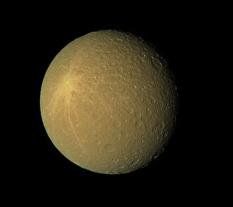

Rhea as seen by the Cassini orbiter
Rhea is the second largest moon of Saturn.
It was discovered by Giovanni Cassini in 1672 and is named after the wife of Cronus in Greek mythology.
The surface is bright and heavily cratered, and has some fractures (chasmata) similar to other cratered planetary bodies.
It is also hypothesised that Rhea might have a tenuous ring system.
If confirmed, this would mark the first discovery of rings around a moon.
In 1672, Giovanni Domenico Cassini discovered Rhea.
This is his second discovered moon around Saturn at the Paris Observatory after Iapetus,
Rhea is named after the Titaness from Greek mythology, wife and sister of Cronus.
According to the legend, she is the one who protects her child Zeus from getting swallowed by his father.
Zeus then manages to dethrone his paranoid father and save his siblings, and Rhea is spared from the Titanomachy, becoming a supporting figure of the Olympian gods.
Initially, Cassini called the four moons he discovered Sidera Lodoicea ("the stars of Louis") in honour of Louis XIV.
Later, these four, along with Titan, were numbered I through V in order from closest to most distant, and later were updated when Mimas, Enceladus, and Hyperion were discovered.
John Herschel was the first to suggest naming satellites of Saturn after Titans and Giants, since Cronus (Greek analogue of the Roman Saturn) is their leader.
Orbit and rotation
Rhea completes an orbit around Saturn every 4,5 days.
The orbit of Rhea has a very low eccentricity of 0.001 and has a low inclination of only 0.35°.
Like many other moons, Rhea is tidally locked to Saturn.
As the second largest moon of Saturn, Rhea has a diameter of 1527 km.
This is only a third of the diameter of the largest one - Titan.
The triaxial measurement of Rhea are consistent with the moon being currently in hydrostatic equilibrium.
Rhea has a nearly homogenous interior of three quarters water ice and one quarter rock.
Only slight differences in the ice-rock mixture near the center are present, where it is more compressed.
Rhea lacks a subsurface ocean.

Rhea in false color, showing the Inktomi crater (top left) more clearly. Source
Rhea is similar to Dione and Tethys in appearance, as the three have a very bright, heavily cratered surface, and a slightly darker trailing hemisphere.
The darkness of the trailing hemisphere could be caused by the plasma from the magnetosphere of Saturn.
Of the craters, the largest two are Mamaldi and Tirawa.
The two are of similar size and next to each other.
Numerous smaller craters cover the two basins, indicating their age.
They have also degraded with time from viscous relaxation.
In contrast, one small crater stands out - Inktomi.
The impact crater is quite small - only 47 km in diameter.
However, unlike the other, it has produced a significant blanket of pure ice ejecta that has obscured older craters.
It is well-defined with a central peak and a depth of 3.6 km, which shows that it is the youngest feature on the surface of Rhea.
On the trailing hemisphere, there are several troughs, similar to those on Dione, but much fewer.
They are likely tectonic in nature.
A tenuous atmosphere is present on Rhea.
The Cassini orbiter detected a composition of oxygen and carbon dioxide.
In 2008, the Cassini spacecraft found evidences for a possible ring system around Rhea — the first time rings would have been found around a moon.
So far, there are two major hints.
One is the depletion of electrons in the magnetosphere of Saturn around Rhea, which could be explained by the presence of solid matter orbiting around the moon.
The second is a chain of spots along the equator, which could be deorbited particles from this ring.
Despite this, no shots of Rhea showed any rings.
The first missions to return images were the two Voyager missions, since the previous Pioneer 11 was too far from Rhea.
Five close flybys were made by the Cassini orbiter, the closest of which was at 69 km from the surface.
Apart from observing the surface of Rhea, it also studied the anomalies around it in search for a ring system.
External links
.jpg){kind=link}